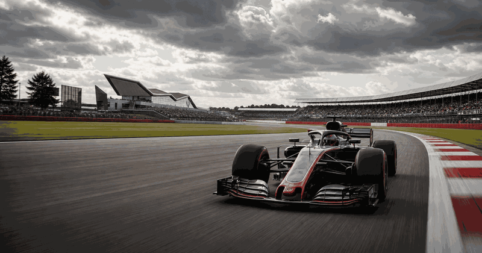
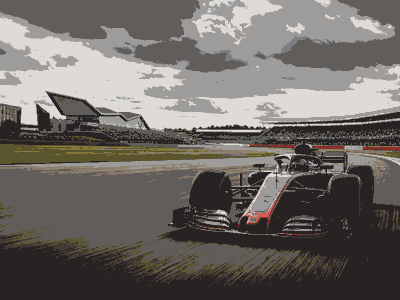

British Grand Prix
First race1926
CircuitSilverstone
Top 4 race winners
1 United KingdomLewis HamiltonBritish GP wins200820142015201620172019202020212024
United KingdomLewis HamiltonBritish GP wins200820142015201620172019202020212024
9
2United KingdomJim ClarkBritish GP wins19621963196419651967
5
3 FranceAlain ProstBritish GP wins19831985198919901993
FranceAlain ProstBritish GP wins19831985198919901993
5
4United KingdomNigel MansellBritish GP wins1986198719911992
4

More Formula 1Formula 1 topicMore races, circuits and calendar moments.